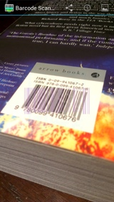

 Для проверки, просто принести штрих-код в поле зрения в центре экрана вашего устройства. Сканер штрих-кодов+ попытается автоматически обнаружить и расшифровать штрих-код, вам не нужно нажимать кнопку.
Вы увидите желтые точки появляются на экране. Они указывают, что применение думаю, что он нашел части штрих-кодов в изображение на экране. Когда он успешно декодирует полную штрих-код, вы услышите звуковой сигнал и / или вибрацию, и результаты экран. (Вы можете включить или отключить звуковой сигнал и вибрация в разделе Настройки.)
Результат экране отобразится Дополнительную информацию для продуктов , И представит кнопки действий, которые могут быть использованы действовать от Содержание штрих-код .
Не держите штрих-кода слишком близко к камере, она не может сосредоточиться, что близко. Штрих-код не должен заполнить экран. Вы увидите, прозрачное изображение штрих-кода, например, в центре экрана. Выровнять по штрих-код, чтобы это руководство, чтобы убедиться, что он предложил на расстоянии.
При сканировании площади, 2D-форматов, таких как QR Code, Data Matrix и Aztec, выровнять по квадратной 2D Например, вы видите в светло-голубой. При сканировании широкого 1D форматов, таких как UPC и EAN кодов продукта, выровнять, чтобы более широкий 1D штрих-код например в розовый цвет. Эти две направляющие будут отображаться поочередно.
Некоторые устройства, такие как планшетные компьютеры, есть дополнительная камера спереди. Выберите "Предпочитаю фронтальной камеры" в разделе Параметры сканирования с ним. Как правило, это возможно только для сканирования 2D-форматов с этой камерой.
Штрих-коды, как правило, отпечатанная черным шрифтом на белом фоне. Некоторые, однако, будут напечатаны в белом на черном. Для проверки этих включите "Обратить сканирование" в разделе Настройки. Вы должны увидеть перевернутое изображение видео. Обратите внимание, что эта функция не оказывает никакого влияния на некоторых устройствах.
Трудно сканирования штрих-кодов в странах с низким или неравномерного освещения. Некоторые устройства имеют свет, который используется в качестве вспышки для съемки. Это может быть включен непрерывно, чтобы осветить штрих-код сканируется. Выберите "Использовать переднего света" в разделе Параметры для того, чтобы свет, или нажмите клавишу увеличения громкости на устройство, если таковое имеется. Не все устройства имеют света, который может быть включен. Обратите внимание, что свет может исходить яркое свечение, которая также делает сканирование трудно.
По умолчанию, приложение будет использовать камеру вашего устройства автофокусом функцию, где это возможно, для сканирования штрих-кодов лучше. Это следует оставить включенной в целом. Тем не менее, есть возможность отключить автофокус, сняв "Использовать автофокусом" в настройках.
Перевод Google Translate.